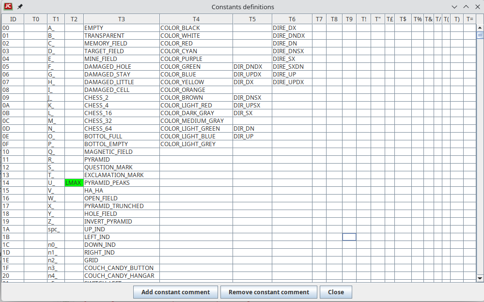
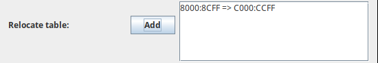
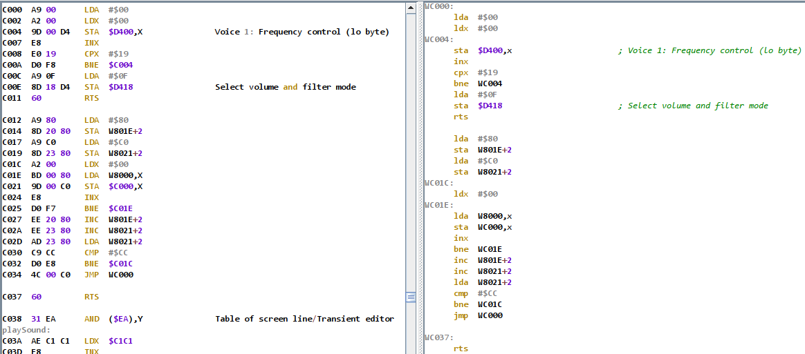
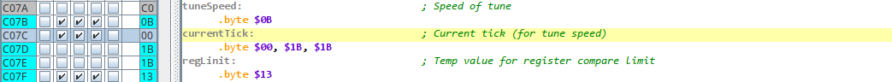
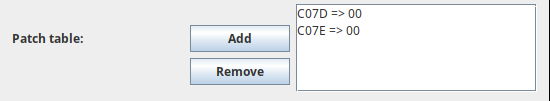

JC64dis File menu
The file menu is dedicated to the project, and so have many voices:


New project
To use the disassembler it is necessary to be inside a project, so creating a new one is the fist step to do.

The project windows gives you the ability to insert:
- Project name: a name to give to the project
- File to disassemble: it let you choose the file that you want to disassemble. Once done, you will see the type (SID, MUS, PRG, MPG, CRT, VSF, AY) detected and some information extracted from the file. In case of a cartridge you have to select the number of chip to disassemble using the spinner
Once selected the file will remain inside the DIS file as an internal copy, so if you get a DIS file and want to see the original binary, you can use the save function after the Select buttom to create a copy of this file.
You can still change the file used inside a DIS by reading another one over it. This can be used when you are analysing program with a common core, so all what you have done before can be as base for the new analysins.
- Target maschine: for program file you can choose the target machine to use in disassembler from:
- M0S 6502:
- C64
- C1541
- C128
- VIC20
- PLUS4
- Z80:
This selection will activate specific comments to know memory locations of each machine.
In Option panel you can select for each machine what range of memory location must be commented automatically.
- SIDLD memory flags: this file were generated by some modified version of SidLength Detector wrote by Michael Schwendt and that myself patched into libsidplay in order to create such memory dump.
The idea were simple: let play a tune of a SID and collect if a given address is of a code or a data or never utilizated. With those flags you can achieve two important step:
- Make at 0 to all the binary locations in SID files not used and being sure that the tune still play correctly. That file can be then compressed more better and I use a lot for saving byte in 4KB/16KB competition!
- Let an disassembler to know if it has to decode a part as of data or as of code.
If you have such files you can simple use Add next button to add one by one. If you want to reset the situation, just use the clear
button or if you want a memory marked as all of code, than use init button.
Take present that you must apply the use of SIDLD with the function into the option menu
- Edit Constant Table: create constants that you can associate to better format the code.
The constant that start with a char and not contains +, -, /, *, < , > are assumed as true constant, all the others are assumed to be relative to other constants (it is left to the user to declare them correctly and it can be used even labels that will not be refactored when changing the name).
You can create constant of type 0..9, so you can then have different constants for the same value. It is allowed to create constant for value over 255, and so it will be used only in data declared as word.
With the right key press onto one column, you can load or save those values to disk. Ctrl+F will let you find and hex address into the table for fast positioning.

- Edit Relocate table: you can insert a list of addresses that are code relocated.
For example: this code takes the contents from $8000 to $8CFF and relocates it to $C000:$CCFF



Now you can makes as garbage the code from $8000 that refers to code relocated in $C000 and continue to works on $C000 analysis.
The disadvantage of this is that the source code you obtain can not be compiled back to the original binary form.
Due to the nature of relocation implementation, when you apply a relocation address it copies the value from one position to another position in memory, so the order of application is important in case of multiple relocation.
For this once added you cannot delete the relocations, so before adding it, save the project and reopen it if the relocation is wrong.
- Edit Patch table: you can insert a list of addresses and a patch value to apply in memory.
Please, note that only value that are inside the read data are patched, not the one in memory outside (thare are so all 0)
For example: this code takes the addresses C07D and C07E that has a $1B value and put a $0 value.



This alteration of the binary code that are applied takes advantage when you disassemble a VICE image, as you can have some values that are the result of code executed until the snapshot were taken.
So you can have an index that must start from 0 when the program is executed the first time but that instead points to the last value reached previously. If you will execut the binary obtained the result will be not the expected.
For patches it is allowed to remove values, but the rules is that you must always delete from the last one by one.
Open project
The function let you open a previusly salved project by read a .dis file.
Only one project can be opened at time, so you have to close the previous before opening a new one.
Open recent project
Show a list of 9 recent project, so you can open one og them (the current project must be saved before open another project)
Close project
This function let you close the current project to work with a new one.
If you had not saved it, you can still save it bebore closing.
Save project
Save the project to the current .dis file being in use.
Save as project
Save the project to a .dis file that you choose or create as new.
Apply SIDlD memory flags to memory
If you have associated some SIDLD files to the project, here you can apply them to the memory location, so you will get the code/data part compiled in automatic.
The program takes your confirmation before going on.
Create a MPR archive
The MPR is a custom files that contains many PRGs inside, so you can disassembly all files together.
This is usefull when you have some files from disk or tape that load itself in different part of the memory: you can so disassembly the memory with all the programs inside.
This means that one program should start and end before the starting of another peaces, otherwise the common memory is filled with the last read one.
For creating the MPR archive you should select all PRG files with CRTL+click from the file selector, then you should insert the name of resulting MPR archive.
Collaborative merge
Suppose you are working in a team for disassembly for example a game. One people will follow the music, one people the graphics, and so on.
You need to create the project for that program and then give a copy to each people of the team to work on.
When all people has worked to their peace, you need to use this function to merge your work with all the other. Your work is so the primary and all the other the secondary.
The idea is that if you apply something to a memory location (make labels, comments, data/code assigment and so on) this will not be altered by secondary files,
otherwise the value of secodary file being imported will be used.
The resulting project file is now the merge of all works and you can see all contribution together.
Exit
This exit the application.